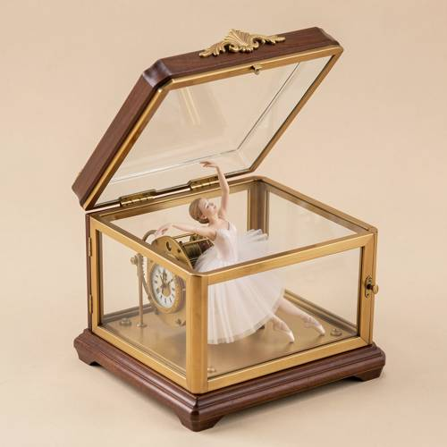
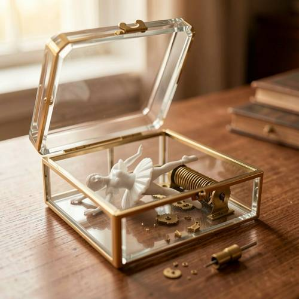
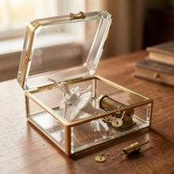
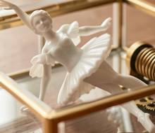
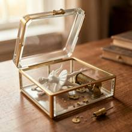
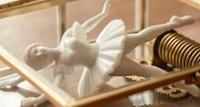

Relationship — A beautiful glass music box was opened, but because the clockwork had
A beautiful glass music box was opened, but because the clockwork had broken, the ballet dancer inside also fell sideways.

Direct — one call, no iteration

Continuum — Qwen3.8-27B + FLUX.2-klein-9B
Judge — Direct
PASSRelationship - Inclusion — The image displays a music box with a wooden frame and glass panels. The lid is propped open, and a figurine of a ballet dancer is visible inside the box.
FAILLogical Reasoning — The prompt requires the ballet dancer to have fallen sideways due to a broken clockwork. In the image, the ballet dancer figurine is standing upright in a graceful pose, not fallen or tilted to the side.
Judge — Continuum
PASSRelationship - Inclusion — The image shows a glass and brass-framed music box with its lid open. Inside the box is a white figurine of a ballet dancer.
PASSLogical Reasoning — The image depicts a white figurine of a ballet dancer lying on its side inside the music box. Additionally, several small metal gears and other components of a clockwork mechanism are scattered inside and outside the box, visually suggesting that the mechanism is broken or disassembled. The fallen position of the dancer alongside the broken parts illustrates the cause-and-effect relationship stated in the prompt.
What the agent did
Thinking
Let me think about this prompt. "A beautiful glass music box was opened, but the clockwork had broken, and even the ballet dancer inside had fallen on its side." So the scene is: an opened glass music box, broken clockwork/spring mechanism, and inside a small ballet dancer figurine (like the one on top of a Nutcracker-style music box) lying sideways/fallen. What I should generate: - A beautiful glass music box (transparent glass case, opened lid) - Inside: a small ballerina figurine lying on its side - Visible broken clockwork mechanism (a broken spring/gear) Let me create a detailed prompt. Use flux2-klein for generation, omit steps/guidance. Prompt ideas: "A beautiful antique glass music box with an opened transparent glass dome, placed on a wooden table. Inside, a delicate porcelain ballet dancer figurine has fallen on its side, and a broken brass clockwork spring mechanism with scattered gears is visible. Warm soft lighting, shallow depth of field, elegant still-life photograph, delicate details." Let me generate this and then verify.
Step 1 — `generate_image`
{
"model": "flux2-klein",
"prompt": "A beautiful glass music box with its lid open, sitting on a wooden table. The case is made of clear glass with elegant gold trim. Inside, a delicate porcelain ballet dancer figurine has toppled and is lying sideways on the base, one arm splayed. Next to her, a broken brass clockwork spring mechanism lies exposed with small gears and a snapped winding stem, clearly broken. Warm soft window light, shallow depth of field, refined still-life photography, fine detail, melancholic elegant atmosphere.",
"width": 1024,
"height": 1024
}
Result img_0

Thinking
Let me check the image. There's a glass music box with its lid open, a ballerina figurine, and a spring mechanism. But the ballerina isn't lying on her side — she's standing upright in a dance pose. The prompt clearly states "the ballerina inside has also fallen on her side." So the figurine should be lying sideways on the bottom of the box. Let me zoom in to check the details.
Step 2 — `inspect_region`
{
"image": "img_0",
"roi": "the ballet dancer figurine inside the box"
}
Result img_1

Thinking
The dancer is standing upright in a graceful dance pose, not lying on her side. The prompt clearly states that because the clockwork was broken, the dancer had fallen on her side. The mechanism looks broken (the winding stem has fallen off outside the box, and there's also a gear), which is good. But the dancer needs to be lying on her side. Let me edit the image so the dancer figurine lies sideways on the bottom of the glass box.
Model
The dancer is still standing upright in a dance pose, but the prompt says she should have fallen sideways. Let me fix that.
Step 3 — `edit_image`
{
"image": "img_0",
"model": "flux2-klein",
"prompt": "The white porcelain ballet dancer figurine is lying flat on its side on the bottom of the glass box, toppled over, her head resting on the glass, legs and tutu spread horizontally, no longer standing. Keep everything else exactly the same: the open glass lid, the broken brass spring and gears, the gold trim, the table."
}
Result img_2

Thinking
With this, the dancer is lying sideways. Let me examine her pose in more detail to make sure it looks natural.
Model
The dancer is now fallen sideways. Let me zoom in to verify the pose looks natural.
Step 4 — `inspect_region`
{
"image": "img_2",
"roi": "the fallen ballet dancer figurine"
}
Result img_3

Thinking
The dancer is lying sideways—head resting on one side, arms outstretched, legs spread out, tutu flowing. It looks like she has fallen over, which fits the description perfectly. The mechanism is clearly broken too: a coiled spring, scattered gears, a detached winding stem outside the box. The glass box with the gold trim has its lid open. This matches all the elements of the prompt: 1. A beautiful glass music box ✓ (glass with gold trim, opened lid) 2. The clockwork is broken ✓ (broken spring, scattered gears, fallen stem) 3. The ballet dancer is lying sideways ✓ This is good. I'll mark it as the best and stop.
Model
The dancer is now lying on her side — her head is resting on the base, her limbs are spread out, and the tutu is flowing — it looks like a genuine fall. The scene matches every element of the prompt: an opened glass music box with gold trim, a broken clockwork mechanism (a deformed spring, scattered gears, a fallen winding stem outside the box), and a fallen porcelain ballerina.
Step 5 — `mark_best`
{
"image": "img_2",
"reason": "All prompt elements present: open glass music box with gold trim, broken clockwork (bent spring, scattered gears, detached winding stem), and the ballet dancer figurine fallen sideways inside."
}
Thinking
Complete. The image has been marked as optimal. It's time to convey the final summary to the user.
Model
The scene is complete. The image shows a beautiful glass music box with its lid propped open, revealing the consequences of the broken clockwork: the brass music mechanism lies mangled with its coiled spring, scattered tiny gears, and the winding stem lying detached on the table. The white porcelain ballet dancer inside has toppled over and lies sideways on the glass base, head resting to one side, limbs splayed — a still moment of silent music, frozen mid-fall in warm window light.